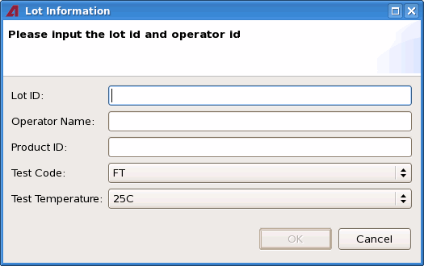
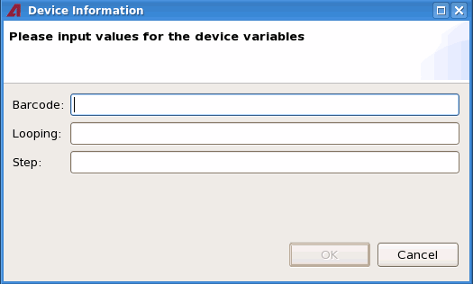

Lot configuration file
This file /etc/opt/h93000/tcct/newlotuiconfiguration.xml is used to control the information that can be entered in the Lot Information dialog and Device Information dialog. The Lot Information dialog is popped up when you click the New Lot button in TCCT. The Device Information dialog is popped up when you click the Start Test button or the Loop button in TCCT.


The listed items in the Lot Information dialog can be reconfigured except the Lot ID and the Operator Name. The default content of the configuration file is as below. You can reconfigure the dialog by deleting or adding new variables in the file.
<?xml version="1.0" encoding="UTF-8"?> <newlot_variables> <!-->these variables will be shown in the Lot Information dialog <--> <variable displayname="Product ID" name="PART_TYP"/> <variable displayname="Test Code" name="TEST_CODE" valuelist="FT,QA,WP,CHAR"/> <variable displayname="Test Temperature" name="TEST_TEMP" valuelist="25C,75C,125C"/> <!-->these variables will be shown in the Device Information dialog <--> <variable displayname="Barcode" name="BAR_COD" popup="starttest"/> <variable displayname="Looping" name="LOOPING" popup="starttest"/> <variable displayname="Step" name="STEP" popup="starttest"/> </newlot_variables>
Functional changes
- Introduced in SmarTest 7.2.0
- SmarTest 7.2.3: Added the Device Information dialog in TCCT 1.5